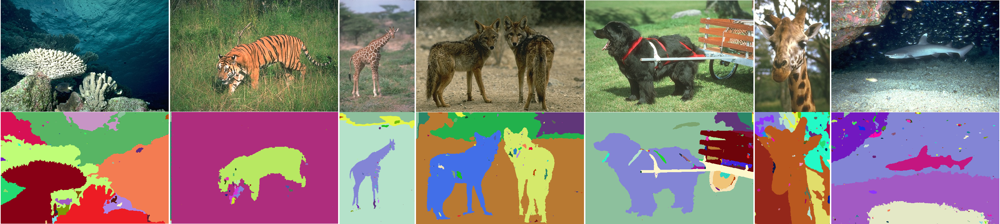

We investigate the use of convolutional neural networks (CNNs) for unsupervised image segmentation. As in the case of supervised image segmentation, the proposed CNN assigns labels to pixels that denote the cluster to which the pixel belongs. In the unsupervised scenario, however, no training images or ground truth labels of pixels are given beforehand. Therefore, once when a target image is input, we jointly optimize the pixel labels together with feature representations while their parameters are updated by gradient descent. In the proposed approach, we alternately iterate label prediction and network parameter learning to meet the following criteria: (a) pixels of similar features are desired to be assigned the same label, (b) spatially continuous pixels are desired to be assigned the same label, and (c) the number of unique labels is desired to be large. Although these criteria are incompatible, the proposed approach finds a plausible solution of label assignment that balances well the above criteria, which demonstrates good performance on a benchmark dataset of image segmentation.
@inproceedings{kanezaki2018_unsupervised_segmentation,
title={Unsupervised Image Segmentation by Backpropagation},
author={Asako Kanezaki},
booktitle={Proceedings of IEEE International Conference on Acoustics, Speech, and Signal Processing (ICASSP)},
year={2018},}